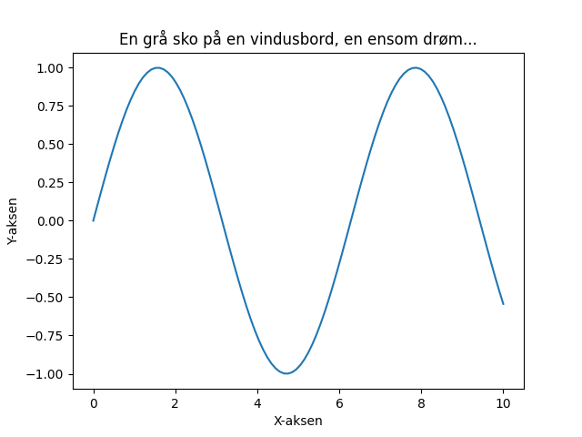

En grå sko på en vindusbord, en ensom drøm, en stille ord. En liten stein, kald og rund, en hemmelighet, forblendet og kunden.

import matplotlib.pyplot as plt
import numpy as np
# Generer noen data for å lage en figur
x = np.linspace(0, 10, 100)
y = np.sin(x)
# Lag en figur og akse
fig, ax = plt.subplots()
# Plott dataene
ax.plot(x, y)
# Legg til et tittel og akseetiketter
ax.set_title("En grå sko på en vindusbord, en ensom drøm...")
ax.set_xlabel("X-aksen")
ax.set_ylabel("Y-aksen")
# Lagre figuren i en fil
plt.savefig(output_path)execution_ok=True fallback_used=False image_ok=True